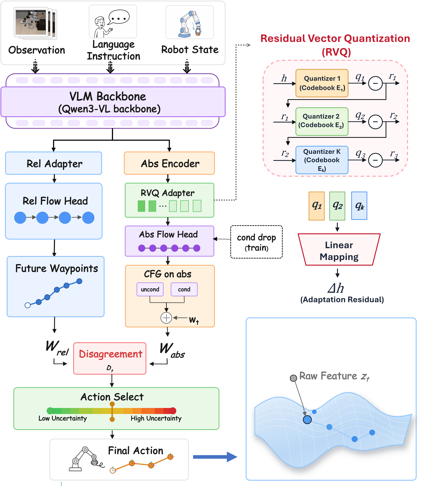

Endogenous failure signal
Disagreement between two action spaces exposes recoverable execution deviations using successful demonstrations only.
IEEE International Conference on Robotics and Automation (ICRA), 2027
Vision-language-action (VLA) policies fine-tuned on limited successful demonstrations can struggle to detect and recover from out-of-distribution execution deviations. Existing solutions often add an external detector or require costly recovery data.
We introduce DUET, a dual-action-head framework trained without failure or recovery trajectories. A state-conditioned relative head provides nominal control, while a state-free absolute head predicts RVQ-anchored return waypoints. After converting each waypoint into a local correction, its disagreement with the relative command continuously gates the two predictions.
On four LIBERO suites and four disturbance families, DUET improves nominal success from 93.8% to 96.9% and action-perturbation success from 27.9% to 64.6%. The same design transfers from StarVLA in simulation to π0 on a real Franka arm.
Disagreement between two action spaces exposes recoverable execution deviations using successful demonstrations only.
The absolute branch supplies a demonstrated-manifold anchor when local relative control becomes unreliable.
The same module operates with StarVLA in LIBERO and π0 on a physical Franka Panda.

DUET predicts the demonstrated behavior in two complementary coordinate systems. The relative head receives the current robot state and produces precise local commands. The absolute head excludes explicit proprioception and predicts global end-effector waypoints from vision and language, anchored by residual vector quantization (RVQ).
Generate a relative command Δat and an absolute waypoint ŵt from shared VLM features.
Transport the waypoint into local action space and measure cross-space disagreement Dt.
Use disagreement to raise αt, shifting control toward the global recovery correction.
We evaluate DUET across four LIBERO suites under nominal execution and four controlled failure families: action perturbation, robot displacement, camera occlusion, and object or grasp drop. Detection baselines follow matched success-only protocols.
Matched LIBERO rollouts comparing the StarVLA baseline with DUET.
Injected action-space disturbance
sim_action_starvla.mp4
sim_action_duet.mp4
End-effector teleport
sim_eef_starvla.mp4
sim_eef_duet.mp4
Observation blackout
sim_camera_starvla.mp4
sim_camera_duet.mp4
Gripper slip and object displacement
sim_drop_starvla.mp4
sim_drop_duet.mp4
| Controller | Gate | Clean | Robot displacement | Action execution |
|---|---|---|---|---|
| DUET-Rel | αt = 0 | 93.8 | 40.0 | 27.9 |
| Absolute-only | αt = 1 | 5.2 | 1.1 | 0.8 |
| Fixed fusion | αt = 0.5 | 46.2 | 39.4 | 41.0 |
| DUET | adaptive αt | 96.9 | 61.7 | 64.6 |
Absolute-only and fixed-fusion rows use the matched Object-suite protocol; DUET and DUET-Rel summary rows aggregate the four-suite evaluation.
| Method | TPR ↑ | TNR ↑ | AUROC ↑ | Loc.@16 ↑ |
|---|---|---|---|---|
| logpZO | 0.889 | 0.243 | 0.817 | 0.569 |
| RND | 0.842 | 0.361 | 0.549 | 0.330 |
| PCA-kmeans | 0.884 | 0.283 | 0.625 | 0.503 |
| STAC | 0.839 | 0.311 | 0.494 | 0.260 |
| DUET (Dt) | 0.900 | 0.265 | 0.845 | 0.523 |
We deploy DUET with a π0-base backbone on a 7-DoF Franka Emika Panda. Four tasks cover pick-and-place, block pushing, drawer opening, and whiteboard wiping. DUET preserves nominal performance while recovering from both robot-state and world-state shifts.

Matched Franka trials comparing the π0 baseline with DUET.
Random-direction end-effector shift
real_robot_state_pi.mp4
real_robot_state_duet.mp4
Object displacement during manipulation
real_world_state_pi.mp4
real_world_state_duet.mp4
| Method | Nominal | Robot-state shift | World-state shift |
|---|---|---|---|
| π0 | 90.0 | 10.0 | 6.3 |
| π0 + DUET | 90.0 | 77.5 | 58.8 |
| Gain | +0.0 | +67.5 | +52.5 |
@inproceedings{anonymous2026duet,
title = {DUET: Endogenous Failure Detection and Recovery
via Dual-Action Disagreement},
author = {Anonymous Authors},
booktitle = {IEEE International Conference on Robotics and Automation},
year = {2026}
}